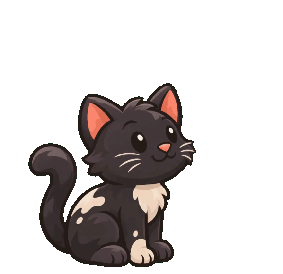
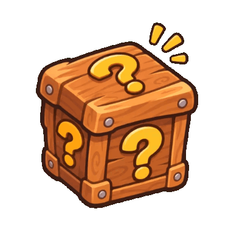

Mini-evento especial
Sexta-feira 13 — Sorte ou Azar?
Um gato misterioso apareceu na fazenda! Alimente-o e descubra o que os dados reservam.
Mini-evento • Tempo limitado
Sexta-feira 13 — Sorte ou Azar?
Giros no ciclo0 / 13
Moedas—
AguardePronto!


🍀 SORTE — 30%
Moedas, XP, Mini Granas ou prêmio raro
💀 AZAR — 70%
Sem recompensa nesta rodada
13 giros por ciclo • 13 horas de descanso após o 13º giro